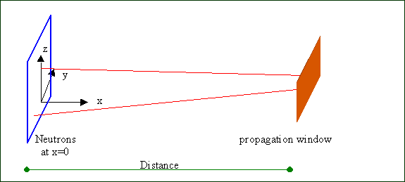

VITESS Module Window
The module window simulates free propagation of neutrons from (x=0) to a
rectangular or circular window which may be defined as a slit, collimator
entrance or exit, or just characterising a space region of interest.
The neutrons at x=0 have been calculated by previous modules (naturally they may
differ with respect to y and z-coordinates, divergence, wavelength and time) and
only those hitting the window are considered further on in case of ideal transmission
or are transmited via the "inner material". Other neutrons are absorbing in case of ideal
absorption or transmitting via the "outer" material.
Their x-coordinates are reset to 0 as usually has to be done by each module after finishing its
specific calculation.

The distance to the rectangular propagation window (with its normal
vector along the x-axis) is simply defined as the projection on the x-axis,
which is the natural choice for most of the cases anyway. rectangular window:
The four input window coordinates define the rectangle by its bordering
values along the y- and z-axis, correspondingly. circular window: The window
radius and the y- and z-coordinates of the window centre have to be given.
There are two kinds of material can be chosen. Outer material is meaning the
"absorbtion" material for the collimator. Inner material is meaning the "transmission"
material for the collimator. The thickness for the each material must be given too.
If the thickness of material is given zero, so for outer material is meaning the ideal
absorbtion. For the inner material is meaning the ideal transmission.
For the inner material data can be red from the file, which has the structure, given
below. If the file is given, the exp. transmission is activating automaticly, otherwise the ideal
transmission is acivated.
List of outer materials, which are included in the module
Value 0 - Read data from file, which created by user
Value 1 - Gd: Gadolinium.
Value 2 - Cd: Cadmium.
Value 3 - B: Bor10.
Value 4 - Eu
Value 5 - Si: Silicon.
Value 6 - Ideal absorbtion
For values 1-4 wavelength range must be 0.3 ... 28 A in the source module or virtual source
Foe value 5 wavelength range must be 1 .. 20 A in the source module or virtual source
This data was given by Thomas Krist, HMI, Berlin.
The format of file, which is describing the transmission is:
Wavelength, A Value MU, cm^(-1)
...............................................................
The wavelength values in the table must be increasing!!!
Then, the transmission is calculated by formula:
Transmission = exp(-MU*Distance);
where Distance is length of flight of neutron in given material in cm, which
calculated automaticly. During passing the neutrons via material, the Transmission
is multiply in the neutron probability.
Please note.
The wavelength range must be from smallest to longest wavelength in the table.
If you used material from list and/or material from file, please choose the
minimal and maximum wavelength values in the source module (or virtual source),
which do not extend the wavelength range for the absorption (outer) and
transmission (inner) materials.
Back to VITESS overview
vitess@hmi.de